LINK POUR MUGEN - VERSION 0.95
~ LISTE DES COUPS ~
Voici la liste des autres coups de Link. Ces coups-ci
peuvent requérir la possession d'un objet particulier et/ou d'un certain
niveau de power. La plupart des combinaisons à réaliser sont plus ou moins
complexe. De façon générale, on appellera "Hyper" les coups consommant au
moins un niveau de power sur les trois dont dispose Link. Les autres coups
seront appelés "Super".
-
Légende :
 ,
, ,
, ,
, ,
, ,
, ,
, ,
, : les 8 directions basiques. Ces directions sont données en supposant que
Link regarde vers la droite.
: les 8 directions basiques. Ces directions sont données en supposant que
Link regarde vers la droite.
 : Quart de
cercle avant ("QCF")
: Quart de
cercle avant ("QCF")
 : Quart de
cercle arrière ("QCB")
: Quart de
cercle arrière ("QCB")
 :
Demi-cercle avant ("HCF")
:
Demi-cercle avant ("HCF")
 :
Demi-cercle arrière ("HCB")
:
Demi-cercle arrière ("HCB")
 : Mouvement
de dragon punch ("DP")
: Mouvement
de dragon punch ("DP")
 : Mouvement
de dragon punch inversé ("DPI" ou "DPR" ou encore "Reversed DP")
: Mouvement
de dragon punch inversé ("DPI" ou "DPR" ou encore "Reversed DP")
 : Maintenir
bas, puis haut.
: Maintenir
bas, puis haut.
 : Maintenir
arrière, puis avant
: Maintenir
arrière, puis avant
 : maintenir
la touche qui suit (direction ou bouton)
: maintenir
la touche qui suit (direction ou bouton)
 :
Bouton Start
:
Bouton Start
 :
Bouton poing faible (X)
:
Bouton poing faible (X)
 :
Bouton poing moyen (Y)
:
Bouton poing moyen (Y)
 :
Bouton poing fort (Z)
:
Bouton poing fort (Z)
 : Un
bouton coup de poing (n'importe lequel)
: Un
bouton coup de poing (n'importe lequel)

 : Deux coups de poing simultanés (n'importe lesquels)
: Deux coups de poing simultanés (n'importe lesquels)


 : Trois coups de poing simultanés (n'importe lesquels)
: Trois coups de poing simultanés (n'importe lesquels)
 :
Bouton pied faible (A)
:
Bouton pied faible (A)
 :
Bouton pied moyen (B)
:
Bouton pied moyen (B)
 :
Bouton pied fort (C)
:
Bouton pied fort (C)
 : Un
bouton coup de pied (n'importe lequel)
: Un
bouton coup de pied (n'importe lequel)

 : Deux coups de pied simultanés (n'importe lesquels)
: Deux coups de pied simultanés (n'importe lesquels)


 : Trois coups de pied simultanés (n'importe lesquels)
: Trois coups de pied simultanés (n'importe lesquels)
 : Simultanéité
de touche. Exemple :
: Simultanéité
de touche. Exemple :


 signifie poing faible et pied faible en même temps (X et A en même temps).
signifie poing faible et pied faible en même temps (X et A en même temps).
-
Le Marteau :


Objet requis : Marteau, Bracelet Goron
Link donne un violent coup de marteau vers le haut, qui projette
l'adversaire dans les airs. C'est un coup idéal pour débuter un air combo.
Tant que Link ne possède pas le Marteau, le
 accroupi sera le même que le
accroupi sera le même que le
 accroupi.
accroupi.
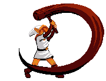
-
Arc & flèches normales :


Objet requis : Arc, Flèches
Maintenez ces deux boutons enfoncés pour retarder le tir.
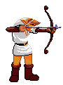
Appuyez sur
 pour vous accroupir
pendant que Link arme son tir.
pour vous accroupir
pendant que Link arme son tir.
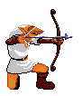
-
Boomerang :


Objet requis : Boomerang
Maintenez
 ou
ou
 avant de le
lancer pour choisir la direction. Si vous maintenez
avant de le
lancer pour choisir la direction. Si vous maintenez
 , le boomerang
rebondira au sol. Si vous êtes touchés après avoir lancé le boomerang et
avant de l'avoir récupéré, il tombera au sol, et vous devrez marcher dessus
pour le récupérer. Vous pouvez utiliser le boomerang avec
, le boomerang
rebondira au sol. Si vous êtes touchés après avoir lancé le boomerang et
avant de l'avoir récupéré, il tombera au sol, et vous devrez marcher dessus
pour le récupérer. Vous pouvez utiliser le boomerang avec
 pour récupérer
des items ou des rupees situés loin de Link.
pour récupérer
des items ou des rupees situés loin de Link.
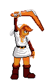
-
Bombe :
Objet requis : Bombes
Aussi dangereuse pour Link que pour l'adversaire.
Maintenez  ou
ou
 avant de la lancer pour choisir la portée. Cette bombe
explose dès qu'elle touche un ennemi ou le sol.
avant de la lancer pour choisir la portée. Cette bombe
explose dès qu'elle touche un ennemi ou le sol.
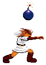
-
Bombe à retardement :
Objet requis : Bombes, Symbole Hylien
Toujours aussi dangereuse pour Link que pour
l'adversaire, et peut être renvoyée à l'expéditeur (l'adversaire doit taper
dans la bombe avant qu'elle n'atterrisse au sol). Cette version est
impossible à bloquer. La bombe devient orange juste avant d'exploser. Maintenez
 ou
ou
 avant de la lancer pour choisir la
portée.
avant de la lancer pour choisir la
portée.
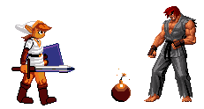
-
Grappin :

Objet requis : Grappin
Link fiche son grappin dans l'adversaire et l'amène à lui. Ce dernier reste sonné pendant un court instant, donnant la possibilité de placer quelques coups. Si le grappin loupe l'adversaire, Link restera un moment sans défense, donc utilisez-le avec prudence !
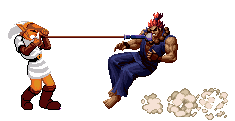
-
Baguette de feu :
Objet requis : Magie du feu
Très grande portée, peut toucher jusqu'à 3 fois. Utilise 1/2 niveau de power.
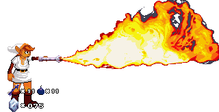
-
Baguette de glace :
Objet requis : Magie de la glace
Immobilise complètement l'adversaire dans un bloc de glace, où qu'il soit. Utilise 1/2 niveau de power.
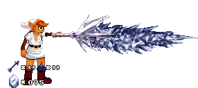
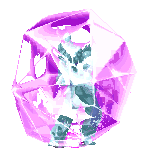
-
Baril de poudre :


Objet requis : Baril de poudre
Link pose un baril de poudre au sol. Il explose au bout de 3 secondes. Le baril peut être renvoyé par l'adversaire et par Link (il suffit d'avancer contre le baril). Plus on arrive vite sur le baril, plus il est repoussé loin. L'explosion du baril de poudre ne peut être bloquée, et est aussi dangereuse pour Link que pour l'adversaire. Elle est annoncée par un son juste peu avant l'explosion.
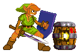
-
Arc & flèches empoisonnées :
Objet requis : Arc, Flèches, Flèches empoisonnées
Link tire une flèche empoisonnée (Link clignote en rouge pour pouvoir différencier les flèches empoisonnées des autres flèches). Utilise 1/3 niveau de power.
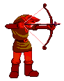
Si elle touche, l'adversaire est empoisonné. Le poison ne peut pas tuer sa victime. Le poison agit à un rythme complètement aléatoire et a une durée variable. Des volutes de fumées vertes entourent le personnage empoisonné tant que le poison est présent.
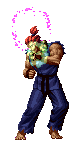
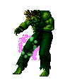
Le poison est également contagieux ; si un Link ou un autre joueur (partenaire ou adversaire du joueur empoisonné) s'approche trop près du joueur empoisonné, il subira également les effets du poison tant qu'il n'aura pas repris ses distances. Lorsque le joueur empoisonné est guéri, cela est indiqué par le message "healed !" qui apparaît sur ce joueur.
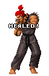
Comme pour les flèches traditionnelles, les flèches empoisonnées peuvent
être tirées accroupies en maintenant
 , et vous pouvez retardez le tir en ne
relâchant pas
, et vous pouvez retardez le tir en ne
relâchant pas


 immédiatement.
immédiatement.
-
Arc & flèches à tête chercheuse :
Objet requis : Arc, Flèches, Flèches à tête chercheuse
Link tire une flèche spéciale (Link clignote en blanc pour pouvoir différencier les flèches à tête chercheuse des autres flèches) ; à peine tirée, celle-ci s'arrête, tourne sur elle-même pour localiser sa cible, et repart enfin en direction de l'adversaire. Utilise 1/3 niveau de power.
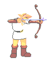
Ce dernier n'a aucun moyen de l'éviter : en effet, la flèche le suit à la trace, qu'il saute, change de côté ou s'accroupisse, la flèche le suit tant qu'elle n'a pas atteint sa cible (ou tant que cette cible n'est pas morte).
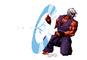
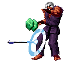
Comme pour les flèches traditionnelles, les flèches à
tête chercheuse peuvent être tirées accroupies en maintenant
 , et vous
pouvez retardez le tir en ne relâchant pas
, et vous
pouvez retardez le tir en ne relâchant pas


 immédiatement.
immédiatement.
-
Boule Kokiri :

Objet requis : Symbole Hylien
Link libère la puissance de son épée dans une boule d'énergie qui fonce vers l'adversaire. Plus la puissance du poing utilisé est élevée, puis la Boule Kokiri sera rapide.
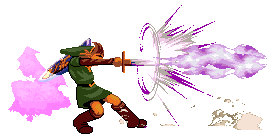
-
Tournante :

Objet requis : Aucun
Appuyez sur
 ou
ou
 au tout début de la version
au tout début de la version
 (
( pour
la version
pour
la version
 ) pour vous déplacer. Les version
) pour vous déplacer. Les version
 et
et
 laissent Link à
terre, alors que la version
laissent Link à
terre, alors que la version
 lui permet de décoller du sol.
lui permet de décoller du sol.
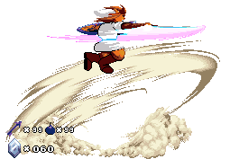
-
Mode "Energy Sword" :
sur la Tournante
Objet requis : Symbole Hylien
Vous pouvez concentrer la puissance de l'épée en maintenant le bouton appuyé. Un son se fait entendre lorsque l'épée est complètement chargée. Vous pouvez ainsi retarder le coup indéfiniment (mais la puissance du coup ne variera plus une fois que le son s'est fait entendre). Lorsque l'épée est complètement chargée (ce qui demande environ 1 seconde et demie), le coup fait le double des dégâts traditionnels. Si vous relâchez avant que l'épée soit complètement chargée, les dégâts supplémentaires seront proportionnels au temps maintenu.
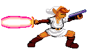
-
Teleport :

Objet requis : Symbole Hylien
Dans la version
 , Link se téléporte
vers l'arrière ; dans la version
, Link se téléporte
vers l'arrière ; dans la version
 , Link se téléporte juste devant son
ennemi, et dans la version
, Link se téléporte juste devant son
ennemi, et dans la version
 , il change de côté. Maintenez
, il change de côté. Maintenez
 dans la version
dans la version
 pour
prolonger le trajet jusqu'au bout de l'écran au maximum.
pour
prolonger le trajet jusqu'au bout de l'écran au maximum.
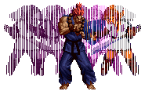
-
Invisibilité :

Objet requis : Masque de Spooky
Link devient complètement invisible. Refaire la
manipulation pour redevenir visible. Le power diminue lorsque vous êtes
invisible, et vous avez besoin d'un niveau de power au minimum pour réaliser
ce mouvement. Vous redevenez visible dans 3 cas :
- lorsque vous refaîtes la manipulation,
- lorsque vous êtes touché par l'ennemi
- lorsque vous n'avez plus de power (en fait, quand vous êtes au sol et que
Link ne fait pas de mouvement particulier).
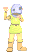
-
Mushu :
Objet requis : Mushu
Un Mushu dégringole du ciel sur l'adversaire ! La version
 vise l'adversaire légèrement devant lui, la version
vise l'adversaire légèrement devant lui, la version
 , légèrement
derrière lui, et la version
, légèrement
derrière lui, et la version
 vise l'adversaire là où il se trouve au
moment de la manipulation.
vise l'adversaire là où il se trouve au
moment de la manipulation.
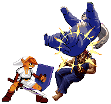
-
Coup d'épée sauté :

Objet requis : Epée Biggoron
Link assène un violent coup d'épée à l'adversaire. La
version
 permet à Link de faire un vrai saut périlleux avec son épée !
permet à Link de faire un vrai saut périlleux avec son épée !
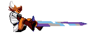
-
Geyser :
ou
Objet requis : Magie du feu
Link plante son épée dans le sol, ce qui fait surgir un geyser d'énergie. Réalisé avec un bouton poing, le geyser sortira près de Link, alors qu'avec un bouton pied, il sortira plus loin. Plus le poing ou pied utilisé est fort, plus le geyser sera grand. Utilise 1/2 niveau de power.
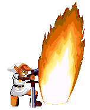
-
Roulé Divin :
en l'air
Objet requis : Aucun
Link redescend au sol en tournant sur lui-même (il est
possible de le déplacer légèrement avec
 ou
ou  durant cette chute). Dans la
version
durant cette chute). Dans la
version
 , Link atterrit au sol sans rebondir, qu'il touche ou non
l'adversaire. Dans la version
, Link atterrit au sol sans rebondir, qu'il touche ou non
l'adversaire. Dans la version
 , Link atterrit au sol sans rebondir s'il ne
touche pas son adversaire, sinon, il rebondit sur son adversaire (que le
coup ait touché ou qu'il ait été bloqué). Enfin, dans la version
, Link atterrit au sol sans rebondir s'il ne
touche pas son adversaire, sinon, il rebondit sur son adversaire (que le
coup ait touché ou qu'il ait été bloqué). Enfin, dans la version
 , Link
peut toucher plusieurs fois de suite son adversaire, et il rebondit vers
l'arrière lorsqu'il touche le sol. Chaque coup est moins puissant que dans
les autres versions, mais le cumul rend cette version plus dévastatrice.
Link ne peut pas frapper l'adversaire lorsqu'il rebondit, ni être déplacé.
Le roulé divin peut toucher un adversaire gisant au sol.
, Link
peut toucher plusieurs fois de suite son adversaire, et il rebondit vers
l'arrière lorsqu'il touche le sol. Chaque coup est moins puissant que dans
les autres versions, mais le cumul rend cette version plus dévastatrice.
Link ne peut pas frapper l'adversaire lorsqu'il rebondit, ni être déplacé.
Le roulé divin peut toucher un adversaire gisant au sol.
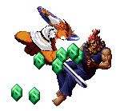
-
Empalement :

Objet requis : Aucun
Link fonce sur son adversaire, lui plante son épée dans le ventre, puis le soulève, saute avec lui, et le balance enfin contre le mur, où il ira rebondir.
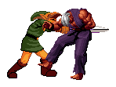
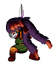
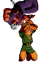
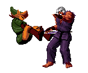
-
Les Bouteilles :
ou
pendant le Taunt
Objet requis : Aucun à la base, mais inutile sans Bouteille.
Link peut posséder jusqu'à 4 bouteilles. Ces bouteilles peuvent contenir différentes choses : de la potion de vie, de la potion de mana, de la potion "totale" ou une fée. La fée vous ressuscite automatiquement si vous perdez un round... Pour en savoir plus, regardez la section "Les Bouteilles".
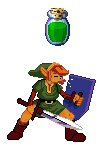
-
Le Bouclier Miroir :
Objet requis : Bouclier Miroir
Ce coup vous permet de renvoyer un projectile à l'adversaire. Si le projectile est un coup normal ou spécial, c'est une Boule Kokiri qui sera renvoyée. Idem si le projectile adverse est un hyper et que vous avez moins de la moitié de votre barre de power (vous risquez alors de vous faire toucher, surveillez votre power !).
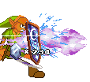
En revanche, si le projectile est un hyper et que votre power est rempli au moins à la moitié, alors l'hyper sera contré par une Onde Kokiri qui sera pratiquement impossible à éviter pour l'adversaire. Cependant, ce miroir vous coûtera la moitié de votre barre de power, et fera deux fois moins de dégâts qu'une Onde Kokiri normale.
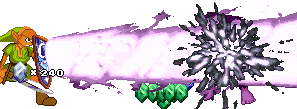
Hypers :
-
Onde Kokiri :
Objet requis : Symbole Hylien
Link concentre toute son power dans son épée pour libérer toute sa puissance dans une décharge d'énergie Kokiri dévastatrice. Requiert 3 niveaux de power (votre barre de power doit être pleine).
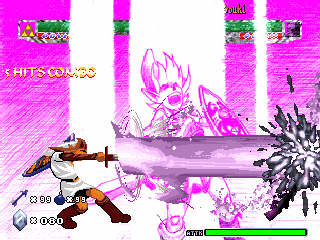
-
Biggoron Scombo :
Objet requis : Marteau, Epée Biggoron
Link fonce sur son adversaire ; s'il le touche, il enchaîne rapidement plusieurs coups pour finalement immobiliser son ennemi dans un filet. Alors que Link lance l'assaut final, le temps s'arrête, pour permettre à l'adversaire de bénéficier du QTC, qui peut le libérer du filet et lui éviter une mort certaine.
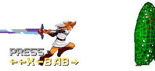
"QTC" signifie "Quick Time Counter" pour la petite histoire. La commande QTC est à exécuter par l'adversaire pour se libérer du filet. S'il échoue, il est certain de mourir sur les coups suivants. Requiert 3 niveaux de power. Les informations de Link et l'avant-plan sont désactivés durant le QTC pour permettre à l'adversaire de lire correctement la commande à réaliser.
-
Chanson du temps :


Objet requis : Ocarina
Une fois réalisée, Link devient beaucoup plus rapide, et la barre de power se vide. Lorsque tout le power a disparu, Link reprend une vitesse normale. Requiert 3 niveaux de power.
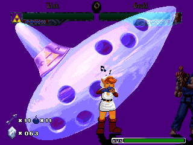
-
Nayru's Love :
Objet requis : Nayru's Love
Link lève son épée au ciel, et un éclair l'enveloppe, faisant apparaître un prisme, qui se met à tourner autour de Link. Tant que ce prisme est présent, Link est absolument intouchable, et son power diminue. La couleur du prisme varie selon le niveau de power restant. Lorsqu'il reste moins d'un demi niveau de power, le prisme clignote. Dès qu'il a disparu, Link redevient vulnérable. Ce coup requiert au moins deux niveaux de power.
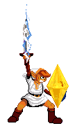
Tant que le prisme n'est pas apparu, Link peut être
touché (donc Link est vulnérable jusqu'au moment où l'éclair arrive, ce qui
laisse environ une seconde à l'ennemi pour frapper Link et empêcher
l'utilisation du Nayru's Love).
Particularité du mode Training : comme le power de Link ne diminue pas en
mode Training, l'invincibilité serait perpétuelle. Il est donc possible de
stopper le Nayru's Love en refaisant la même manipulation (vous pouvez la
faire au sol, mais également en l'air). Ceci n'est valable que pour le mode
Training. Dans les autres modes, il est impossible de stopper le Nayru's
Love ; celui-ci ne s'arrête que lorsque tout le power a été consumé.
-
Danse des Illusions :
Objet requis : Symbole Hylien
Des doubles de Link apparaissent et imite les coups de l'original. Pendant ce temps, le power se vide, et lorsqu'il n'y en a plus, les doubles disparaissent. Ils disparaissent également si Link est touché. Plus le poing utilisé pour la commande est faible, plus le délai entre les coups de Link et ceux de ses clones sera court. Requiert au moins la moitié d'une pleine barre de power.
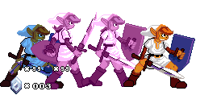
~~~~~~~~~~~~~~~~~~